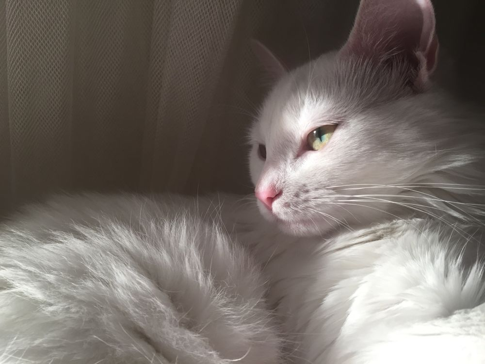

Risk Management
The gradual accumulation of information about

White CatsWhite cats have always attracted people's attention with their elegance and mysterious appearance. They are associated with purity, gentleness, and even mysticism. In many cultures, white cats are considered special animals that bring happiness and harmony to the home.
The genetics of white coat color is quite fascinating. A cat's white fur results from the absence of pigmentation, which is often caused by the dominant W gene. This gene suppresses the production of melanin, leaving the coat completely white.
White cats can have different eye colors: blue, green, yellow, or even odd-colored eyes. Cats with heterochromia—when each eye is a different color—look especially enchanting. These cats are truly unique.
However, a white coat is often associated with certain genetic traits. For example, blue-eyed white cats have a higher risk of congenital deafness. This is because pigment cells also play an important role in the development of the hearing system. Nevertheless, deafness does not prevent these cats from being wonderful pets.
Many cultures have beliefs and superstitions about white cats. In Japan, they symbolize good luck and prosperity. In Western Europe, they are considered a sign of good fortune, and in some countries, they were even used as charms to protect against evil spirits.
Caring for a white cat requires special attention. Its fur gets dirty easily, so regular brushing and bathing are essential. White cats should also avoid prolonged exposure to direct sunlight, as their light-colored skin is more susceptible to sunburn.
Another remarkable feature of white cats is their graceful appearance. They often seem more elegant and refined than other cats. Their snowy-white fur gives them a magical charm, making them look like fairy-tale creatures.
White cats are known for their calm and gentle personalities. They are usually affectionate and enjoy attention and care. However, like all cats, they can also be independent and have unique personalities of their own.
Owners of white cats often say that their pets bring a special atmosphere into the home. They radiate peace, comfort, and harmony, making their owners' lives brighter and happier.
Overall, white cats are true gems of the animal world. They combine beauty, gentleness, and mystery while remaining loyal companions to their owners.
The gradual accumulation of information about
The gradual accumulation of information about
The gradual accumulation of information about
The gradual accumulation of information about